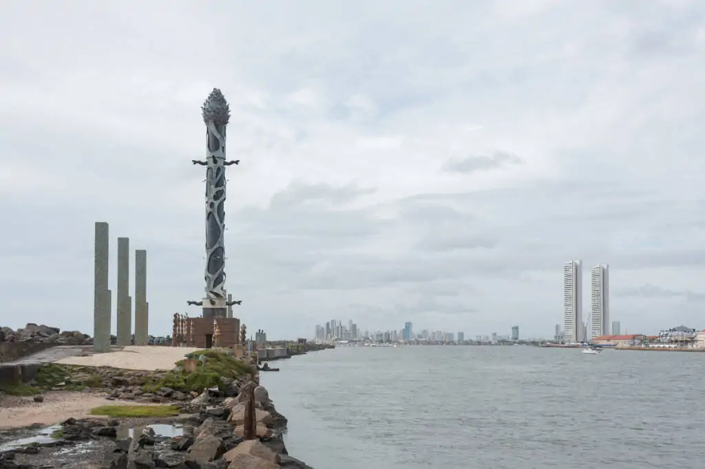
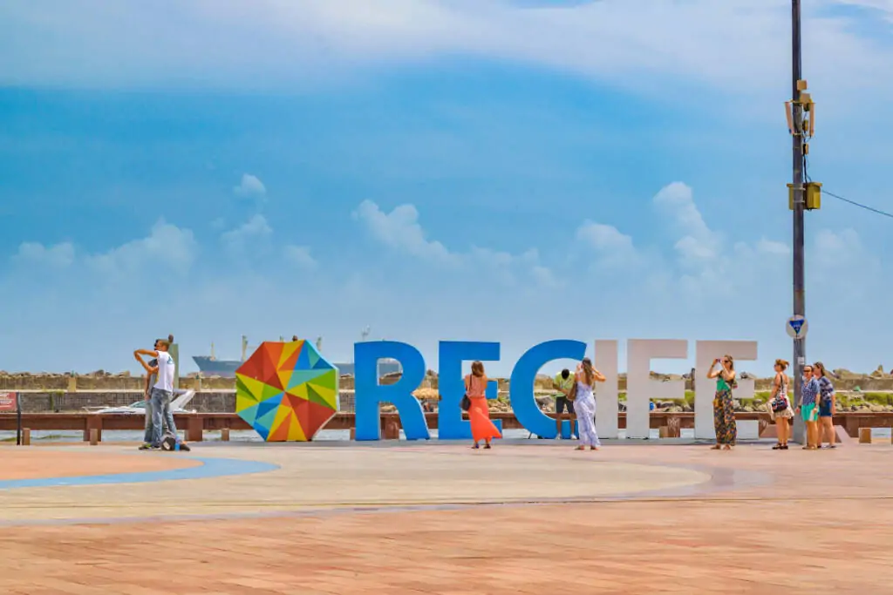

O Marco Zero no Recife Antigo é um dos pontos turísticos mais importantes para quem deseja conhecer a capital de Pernambuco. Isso porque é um local de importância histórica que conta o nascimento da cidade e possui forte referência cultural.
A história do Marco Zero no Recife Antigo
O Marco Zero no Recife Antigo é o lugar de referência onde a cidade nasceu e todas as medidas oficiais de distâncias rodoviárias usam como ponto de partida. Seu nome é, na verdade, Praça Rio Branco e fica ao lado do Porto de Pernambuco.
Boemia no Marco Zero do Recife Antigo
Por último, não dá para falar do Marco Zero sem considerar as muitas opções de entretenimento nos antigos armazéns ao longo da orla. Para se ter uma ideia, são bares temáticos, restaurantes com gastronomia local e mundial e points para quem quer diversão, boa música e entretenimento. Além deles, há opções para os mais diversos bolsos e gostos também na região central do Antigo Recife, em vielas de pedra sabão e um charme único da capital de Pernambuco.
